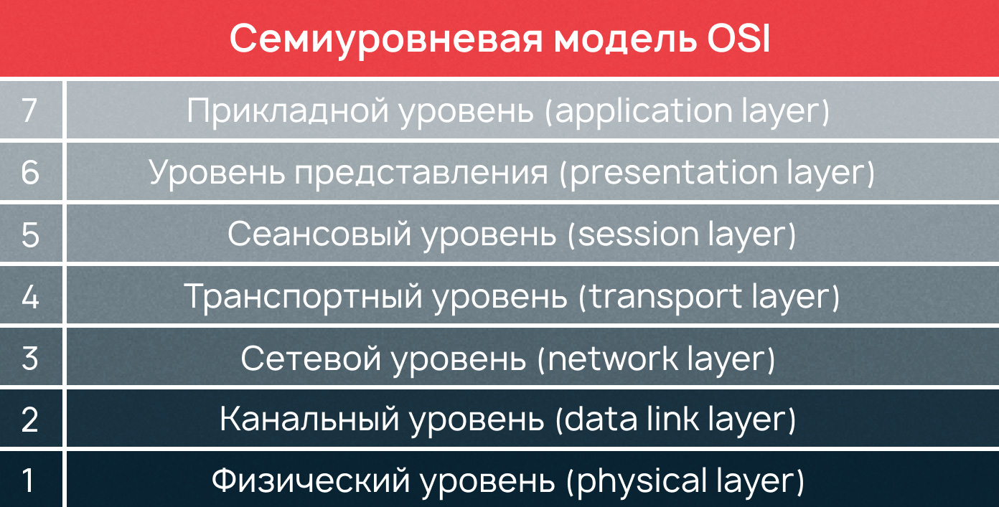
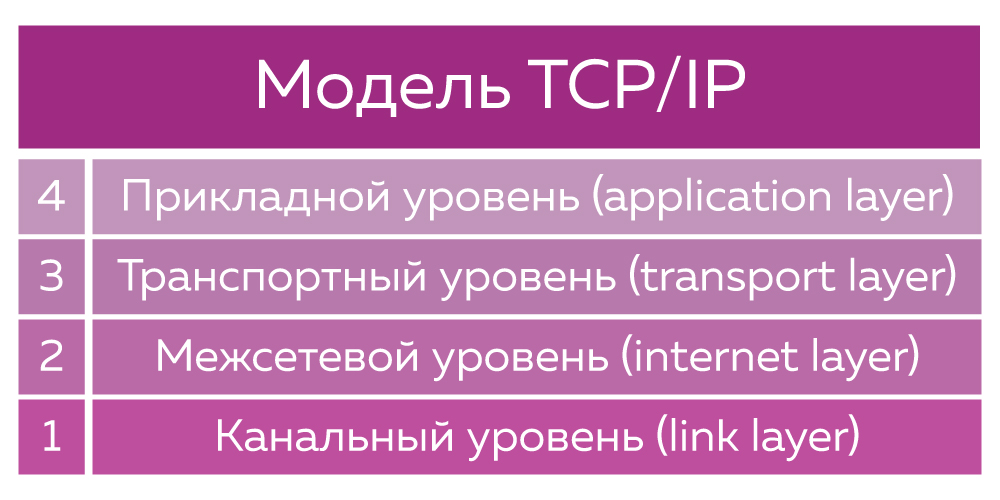

Сетевой протокол — это набор правил, определяющий принципы взаимодействия устройств в сети. Чтобы отправка и получение информации прошли успешно, все устройства-участники процесса должны принимать условия протокола и следовать им. В сети их поддержка встраивается или в аппаратную часть (в «железо»), или в программную часть (в код системы), или и туда, и туда. Для взаимодействия протоколов между собой существует модель OSI, или Open Systems Interconnection. Дословно название переводится как «взаимодействие открытых систем».
Cетевой протокол, используемый маршрутизаторами для определения возможных маршрутов следования данных в составной компьютерной сети. Применение протокола маршрутизации позволяет избежать ручного ввода всех допустимых маршрутов, что, в свою очередь, снижает количество ошибок, обеспечивает согласованность действий всех маршрутизаторов в сети и облегчает труд администраторов.
Модель OSI — это модель, позволяющая разным системам связи коммуницировать между собой по общепринятым стандартам. Ее можно сравнить с английским, то есть глобальным, универсальным языком в мире сетей. Модель основана на принципе разделения коммуникационной системы на семь отдельных уровней.

Если в передачи информации случаются сбои, модель помогает быстрее и легче локализовать проблему на конкретном уровне и значительно ускорить процесс восстановления работоспособности системы. Модель OSI является эталонным стандартом, но на данный момент она устарела, поскольку современные протоколы работают сразу на нескольких уровнях модели OSI. На смену модели OSI пришла модель TCP/IP, на основе которой работает большая часть устройств в современном мире.
TCP/IP – это сетевой протокол компьютерных сетей, используемый для передачи данных между узлами сети. Он состоит из двух протоколов: протокола управления передачей (TCP) и протокола интернета (IP).
Протокол IP отвечает за маршрутизацию пакетов данных в сети и определение адресов узлов в сети. Каждому узлу в сети назначается IP-адрес, который состоит из четырех чисел, разделенных точками. Это позволяет определить местоположение узла в сети и на основе этой информации передавать ему данные.

Протокол TCP отвечает за установление соединения между узлами в сети и обеспечение надежной передачи данных. Он разбивает данные на пакеты, устанавливает порядок их передачи и проверяет, что все пакеты были получены. Если при передаче данных возникают ошибки, протокол TCP автоматически повторяет передачу.